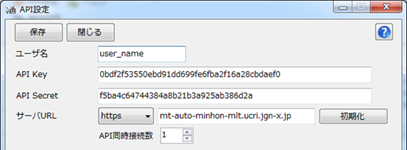
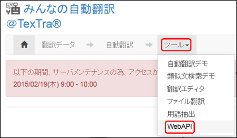
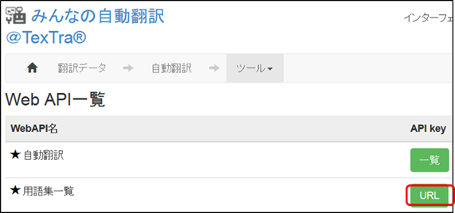
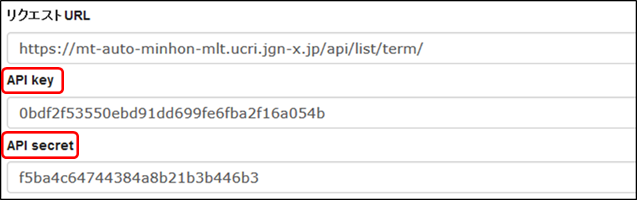
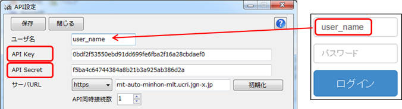
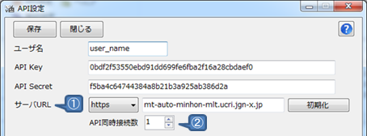
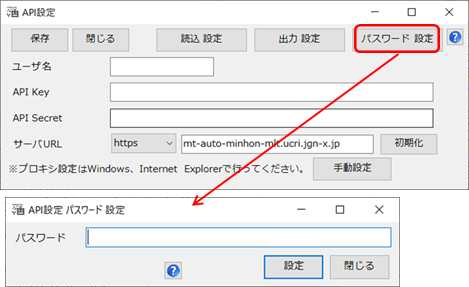
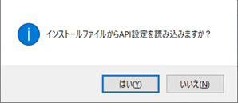

API設定
Webサイトと連携を行うために、
TexTra
Trados
Addinでは最初に「API設定」を行う必要があります。

Webサイト「みんなの自動翻訳」からも設定は取得可能です。
ログイン後、メニュー＞ツール＞WebAPIを選択します。

Web
API一覧からいずれかのURLボタンを押します。

表示された画面から「APIKey」「API
Secret」をコピーして
TexTra
Trados AddinのAPI設定画面に貼り付けます。

ユーザ名にはWebサイトログイン時のユーザIDを入力してください。


① APIサーバの設定です。
通常、変更する必要はありません。
URLを変更する場合は、
プロトコル（http、https）の設定も行ってください。
② API同時接続数の設定です。
１に設定すると、動作が安定します。
※ この画面で入力するサーバURLは
「翻訳設定」の項で説明される
「機械翻訳APIのURL」ではありません。
※ プロキシ設定は
Windows、Internet
Explorerで行ってください。
※ 必要である場合、
プロキシサーバ管理者に下記情報をお知らせください。
ユーザーエージェント =>
「TexTra Trados NICT」
・ パスワード設定（管理者向け）
API設定画面を開くための
パスワードを設定します。
API設定を管理者側で行い、
アプリユーザに設定を見せたくない、という場合に、
本機能を利用してください。

パスワード入力画面でリセットボタンを押すと、
パスワードとAPI設定が消去されます。
・ 自動設定読込み（管理者向け）
API設定を未設定時に
API設定を自動で行う機能です。
（API設定画面パスワードも設定されます。）
インストーラー、または、手動で
インストールフォルダ（本プラグインのvstoファイルがあるフォルダ）に
「api.ini」という名前の設定ファイルを配置してください。
設定ファイルは
API設定画面でAPI設定を入力した後、
「出力
設定」ボタンで出力してください。
(設定ファイル内のパラメータは暗号化されます。）
API画面を開いた際、
ファイルから設定を読み込むかどうか、
メッセージが表示されます。

このメッセージを表示させたい場合は、
API設定を消去してください。